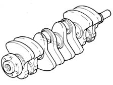
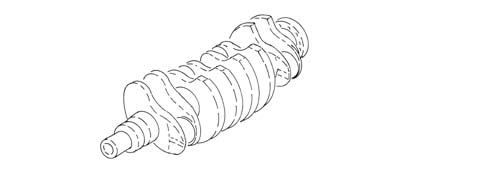
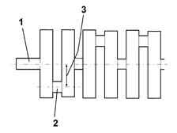

1024A crank shaft
- Path
- Descriptions > 10 ENGINE > 1024 CRANKSHAFT AND FLYWHEEL > 1024A crank shaft
- Kind
- system description
- Applies to
- all engines; all production periods
- Interactive page
- https://sloeber94.github.io/elrnDB-fPnd/en/#/2750881
Applies to: engines: 1.1, 1.2 8v; all production periods
Made from cast iron, induction hardened. It rests on five main bearings with bearing shells graded into different sizes.
The crankshaft endfloat is adjusted by two thrust washers located by the centre main bearings.
Eight counterweights arranged at 180° ensure that the crankshaft rotating masses are perfectly balanced.
A channel runs along the inside of the shaft to lubricate the main bearings and big end bearings.

Applies to: engines: 1.3 JTD 16v; all production periods
Made from steel, it rests on five main journals and the endfloat is adjusted by two thrust washers located in the rear main bearing.
Eight counterweights ensure that the rotating masses of the crankshaft are precisely balanced.
A series of channels run along the inside of the crankshaft to lubricate the main bearings and big end bearings.

Applies to: engines: 1.1, 1.2 8v; all production periods
The crankshaft consists of:
- main journals (1), through which it rolls on the supports with (friction type) bearings;
- crank pins (2), over which the connecting rod big ends fit;
- crank arms (3), the same height as half the travel, which connect the main journals to the crank pins.

Applies to: engines: 1.1, 1.2 8v; all production periods
The shaft is already prepared for:
- the fitting of the flywheel;
- the fitting of the gear which, via a toothed belt, transmits the power to the timing system components.
Applies to: engines: 1.1, 1.2 8v; all production periods
OPERATION
The crankshaft consists of:
- main journals (1), through which it rolls on the supports with (friction type) bearings;
- crank pins (2), over which the connecting rod big ends fit;
- crank arms (3), the same height as half the travel, which connect the main journals to the crank pins.
Applies to: engines: 1.1, 1.2 8v; all production periods
OPERATION
There may be two firing orders: 1, 2, 4, 3 or 1, 3, 4, 2; the most common firing order is 1, 3, 4, 1 as the centrifugal forces and inertia forces are more balanced.